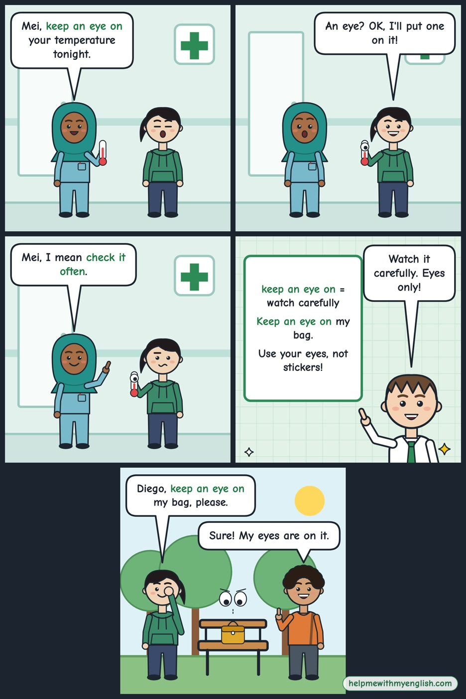

keep an eye on
To watch something carefully to see if it changes.
Please keep an eye on your temperature tonight.
Tip: Use it as keep an eye on + something or someone, and it works for people, objects and situations; don't confuse it with 'have an eye for', which means being good at noticing details.
Hear it in conversation
Workbook
1. What does it mean?
In this conversation, what does keep an eye on mean?
2. Fill the gap
The prices on that website change fast, so I'm going to them until the weekend.
3. Choose the best reply
Olena: I'm going to be in a meeting for an hour, and my laptop is still downloading the update.
4. Your turn: speak
Tell me about something in your life that you need to monitor carefully at the moment, such as a deadline, a budget or your health.
Show an example answer
At the moment I'm trying to save money for a trip, so I keep an eye on my spending every week. I check my bank app on Sundays to see if I'm still on track. If I notice I've spent too much on takeaway food, I cook at home for a few days.
Answer key: keep an eye on
- 1. D. Look at something now and then to see if it needs attention
- 2. keep an eye on
- 3. A. Don't worry, I'll keep an eye on it and tell you if anything goes wrong.
- 4. Example: At the moment I'm trying to save money for a trip, so I keep an eye on my spending every week. I check my bank app on Sundays to see if I'm still on track. If I notice I've spent too much on takeaway food, I cook at home for a few days.
See it in a comic
